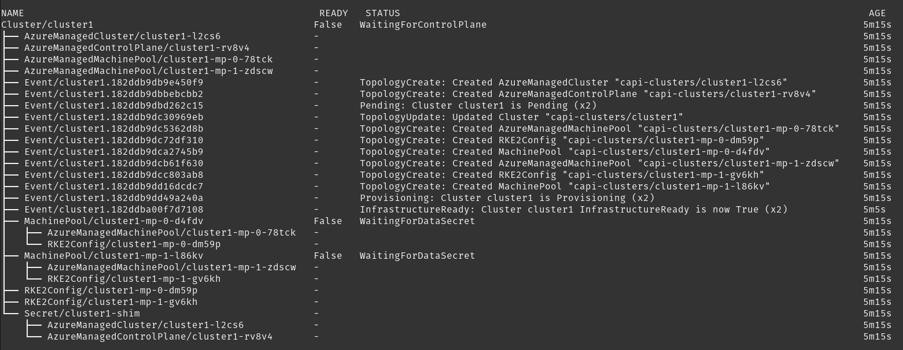

|
Este documento foi traduzido usando tecnologia de tradução automática de máquina. Sempre trabalhamos para apresentar traduções precisas, mas não oferecemos nenhuma garantia em relação à integridade, precisão ou confiabilidade do conteúdo traduzido. Em caso de qualquer discrepância, a versão original em inglês prevalecerá e constituirá o texto official. |
Solução de Problemas do Rancher Turtles
Este guia fornece etapas de solução de problemas para Rancher Turtles e clusters da API de Cluster (CAPI). Ele abrange problemas comuns e suas resoluções para ajudá-lo a manter um ambiente estável e funcional.
Antes de ler este guia, você pode primeiro consultar a documentação oficial troubleshooting do projeto CAPI.
Compreender as complexidades tanto do Rancher Turtles quanto do CAPI é crucial para uma solução de problemas eficaz. Este guia tem como objetivo equipá-lo com o conhecimento para diagnosticar e resolver problemas básicos no Rancher Turtles e no CAPI.
Pré-requisitos
Para solucionar efetivamente problemas no Rancher Turtles e em clusters CAPI, você precisa:
-
Acesso a um terminal com kubectl configurado para acessar o cluster de gerenciamento do Rancher.
-
O gerenciador de plugins Krew para kubectl instalado.
-
A ferramenta de linha de comando Helm instalada.
Você pode instalar o Krew seguindo as instruções no guia de instalação do Krew.
Como verificar os logs
Você pode visualizar os seguintes pods e verificar seus logs nos seguintes namespaces:
| Namespace | Implantação | Descrição |
|---|---|---|
cattle-turtles-system |
rancher-turtles-controller-manager |
Gerencia a integração do Rancher e os recursos personalizados para Turtles |
fleet-addon-system |
caapf-controller-manager |
Controla o Cluster API Provider Framework para provedores de infraestrutura personalizados |
cattle-capi-system |
capi-controller-manager |
Controlador da API do Cluster Core que reconcilia os recursos principais do cluster |
rke2-bootstrap-system |
rke2-bootstrap-controller-manager |
Gerencia a configuração de inicialização para nós RKE2 |
rke2-control-plane-system |
rke2-control-plane-controller-manager |
Gerencia a inicialização e o gerenciamento dos componentes do plano de controle RKE2 |
*-system |
*-controller-manager |
Gerencia a inicialização e o gerenciamento dos componentes do provedor de infraestrutura |
$-bootstrap-system |
$-bootstrap-controller-manager |
Gerencia a configuração de inicialização para provedores personalizados |
$-control-plane-system |
$-control-plane-controller-manager |
Gerencia a inicialização e o gerenciamento dos componentes do plano de controle de provedores personalizados |
'*' - dependendo do provedor de infraestrutura em uso '$' - dependendo do provedor de controle/plano de bootstrap em uso, por exemplo, kubeadm ou rke2
Uma maneira de monitorar os logs dos pods do plano de controle da API do Cluster é usando kubectl logs com o seletor de rótulos.
kubectl logs -l control-plane=controller-manager -n cattle-turtles-system -f
kubectl logs -l control-plane=controller-manager -n cattle-capi-system -f
kubectl logs -l control-plane=controller-manager -n rke2-bootstrap-system -f
kubectl logs -l control-plane=controller-manager -n rke2-control-plane-system -f|
Usar |
O melhor método para monitorar logs de diferentes pods é usando o seguinte método.
kubectl krew install sternEntão você pode acompanhar os logs de todos os pods em tempo real.
kubectl stern . -n cattle-turtles-system -n rke2-bootstrap-system -n rke2-control-plane-system -n cattle-capi-systemou
kubectl stern -A -l control-plane=controller-managerComo gerenciar Rancher Turtles e recursos CAPI
Liste os recursos do Rancher e da API do Cluster
Os usuários costumam perguntar como lidar com longas listas de diferentes CRDs criadas pelo CAPI e pelo Rancher; aqui estão algumas ideias sobre como você pode lidar com isso.
-
Liste todas as credenciais relacionadas ao CAPI e ao Rancher.
kubectl api-resources | grep 'cattle.io\|cluster.x-k8s.io' -
Saiba mais sobre o recurso. Você pode obter uma explicação completa sobre o que ele está fazendo ou quais são as opções de configuração.
kubectl api-resources | grep clusterclass kubectl explain clusterclass.cluster.x-k8s.io -
Então você recebe uma descrição sobre cada campo e seção de configuração.
kubectl explain clusterclass.spec kubectl explain clusterclass.spec.controlPlane kubectl explain clusterclasses.spec.controlPlane.machineInfrastructure
Liste os recursos existentes de objetos do Rancher e da API do Cluster
O erro mais comum é usar o namespace default no Kubernetes para o seu trabalho. Isso torna sua configuração realmente bagunçada e difícil de gerenciar e solucionar problemas. Recomendamos fortemente o uso de namespaces separados para implantar e criar clusters downstream do CAPI e evitar o uso de namespaces do sistema Kubernetes, como default e kube-*.
Ao aplicar templates com kubectl, sempre especifique -n <NAMESPACE> para provisionar recursos em um local conhecido. Você pode alternar entre namespaces em KUBECONFIG com este comando:
kubectl config view
kubectl config set-context --current --namespace <NAMESPACE>Com namespaces separados, você pode gerenciar recursos facilmente seguindo este método.
|
Usar |
-
Instale os plugins
get-allelineageusandokrewparakubectlkubectl krew install lineage kubectl krew install get-all -
Então liste todos os recursos existentes no namespace, por exemplo
capi-clusters, onde sua configuração de cluster downstream está implantada.kubectl get-all -n capi-clustersSaída de exemplo:
NAME NAMESPACE AGE configmap/kube-root-ca.crt capi-clusters 23h secret/cluster1-shim capi-clusters 32s serviceaccount/default capi-clusters 23h rke2config.bootstrap.cluster.x-k8s.io/cluster1-mp-0-dm59p capi-clusters 32s rke2config.bootstrap.cluster.x-k8s.io/cluster1-mp-1-gv6kh capi-clusters 32s rke2configtemplate.bootstrap.cluster.x-k8s.io/cluster1-pool0 capi-clusters 33s rke2configtemplate.bootstrap.cluster.x-k8s.io/cluster1-pool1 capi-clusters 33s clusterclass.cluster.x-k8s.io/clusterclass1 capi-clusters 33s cluster.cluster.x-k8s.io/cluster1 capi-clusters 32s machinepool.cluster.x-k8s.io/cluster1-mp-0-d4fdv capi-clusters 32s machinepool.cluster.x-k8s.io/cluster1-mp-1-l86kv capi-clusters 32s clustergroup.fleet.cattle.io/clusterclass1 capi-clusters 33s azureclusteridentity.infrastructure.cluster.x-k8s.io/cluster-identity capi-clusters 33s azuremanagedcluster.infrastructure.cluster.x-k8s.io/cluster1-l2cs6 capi-clusters 32s azuremanagedclustertemplate.infrastructure.cluster.x-k8s.io/cluster capi-clusters 33s azuremanagedcontrolplane.infrastructure.cluster.x-k8s.io/cluster1-rv8v4 capi-clusters 32s azuremanagedcontrolplanetemplate.infrastructure.cluster.x-k8s.io/cluster1-control-plane capi-clusters 33s azuremanagedmachinepool.infrastructure.cluster.x-k8s.io/cluster1-mp-0-78tck capi-clusters 32s azuremanagedmachinepool.infrastructure.cluster.x-k8s.io/cluster1-mp-1-zdscw capi-clusters 32s azuremanagedmachinepooltemplate.infrastructure.cluster.x-k8s.io/cluster1-pool0 capi-clusters 33s azuremanagedmachinepooltemplate.infrastructure.cluster.x-k8s.io/cluster1-pool1 capi-clusters 33s -
Então você pode verificar o relacionamento entre todos os recursos de objeto.
kubectl lineage -n capi-clusters cluster.cluster.x-k8s.io/cluster1Saída:

Como habilitar o modo de debug para SUSE® Rancher Prime Cluster API e provedores CAPI
-
SUSE® Rancher Prime Cluster API - Para habilitar o modo de debug para SUSE® Rancher Prime Cluster API, você precisa aplicar um patch no ConfigMap
cattle-system/rancher-configda seguinte forma:kubectl patch configmap -n cattle-system rancher-config --type merge --patch '{"data":{"rancher-turtles": "managerArguments:\n - --v=5\n"}}'(5 é equivalente a DEBUG)
Isso resulta na reinicialização do pod Turtles, a fim de usar a nova configuração.
-
Cluster API Providers - Edite os recursos CAPIProvider para provedores onde aumentar o nível de log é necessário. Altere para o nível desejado:
CAPIProvider.Spec.Manager.Verbosity=5(5 é equivalente a DEBUG)
Como coletar informações do Rancher Turtles e CAPI
crust-gather é um projeto criado pelos desenvolvedores da API do Cluster, especificamente projetado para coletar logs e estados de recursos de ambientes CAPI. É uma ferramenta segura e oficial que pode ser usada em qualquer tipo de ambiente (produção, teste ou desenvolvimento) para coletar informações diagnósticas abrangentes para solução de problemas.
Você pode instalá-la através das seguintes instruções:
kubectl krew install crust-gather
kubectl crust-gather --helpAlternativamente, pode ser instalada de forma independente através do script install.sh:
curl -sSfL https://github.com/crust-gather/crust-gather/raw/main/install.sh | sh
crust-gather --helpVocê pode especificar uma lista de filtros para coletar dados. Por padrão, é tirado um instantâneo completo do cluster. Os dados são armazenados no diretório crust-gather por padrão. Crust-gather aceita uma configuração de filtro pré-definida para Rancher ou o cluster filho. Veja abaixo exemplos de configurações.
Exemplo de configuração de filtro YAML para o arquivo child-crust-gather.yaml:
filters:
- include_kind:
- Node
- Namespace
- CustomResourceDefinition
- include_group:
- management.cattle.io/.*
- provisioning.cattle.io/.*
- include_namespace:
- cattle.*
- fleet.*
- kube-system
settings:
insecure_skip_tls_verify: true
secrets_file: secrets.txtExemplo de configuração de filtro YAML para o arquivo rancher-crust-gather.yaml:
filters:
- include_group:
- .*cluster.x-k8s.io/.*
- turtles-capi.cattle.io/.*
- include_kind:
- CustomResourceDefinition
- Node
- Namespace
- include_group:
- management.cattle.io/.*
- provisioning.cattle.io/.*
- include_namespace:
- cattle-turtles-system
- capi-.*
- cattle.*
- fleet.*
- c-.*
- rke2.*
- cert-manager
- kube-system
settings:
insecure_skip_tls_verify: true
secrets_file: secrets.txtCertifique-se de que o kubeconfig aponte para o cluster correto e, em seguida, execute o comando abaixo:
kubectl crust-gather collect-from-config -c config.yamlUso via flags regulares:
kubectl crust-gather collect --include-namespace cattle-turtles-system --include-namespace capi-* --include-namespace cattle* --include-namespace c-* --include-namespace=<any-capi-cluster-namespace> --kubeconfig=<KUBECONFIG>Você pode especificar um arquivo com segredos ou variáveis de ambiente com strings de segredos para excluir.
Por exemplo:
kubectl crust-gather collect -s ENV_WITH_SECRET --secrets-file=secrets.txtOu exclua todos os recursos secretos da coleção:
kubectl crust-gather collect --exclude-kind SecretComo limpar Rancher Turtles e recursos CAPI
Às vezes, a limpeza da sua infraestrutura pode falhar e isso pode levar a recursos pendentes. Nessa situação, você deve remover os recursos manualmente.
Tenha em mente que remover finalizadores manualmente exige limpar manualmente os recursos provisionados pelo provedor de infraestrutura.
export NAMESPACE=capi-clusters
for RESOURCE in `kubectl get-all -n $NAMESPACE -o name | grep 'cattle.io\|cluster.x-k8s.io'`;
do
echo "Patching $RESOURCE in namespace $NAMESPACE";
kubectl patch $RESOURCE -n $NAMESPACE -p '{"metadata":{"finalizers":[]}}' --type=merge;
kubectl delete $RESOURCE -n $NAMESPACE;
doneComo desinstalar Rancher Turtles e o projeto CAPI
Para desinstalar Rancher Turtles e componentes CAPI do seu cluster de gerenciamento, siga estas etapas na ordem:
-
Primeiro, exclua todos os clusters downstream criados com CAPI. Para cada cluster:
kubectl delete -n capi-clusters cluster.cluster.x-k8s.io cluster1Substitua
capi-clusterspelo namespace onde seus clusters estão implantados ecluster1pelo nome do seu cluster. Aguarde até que cada cluster seja totalmente excluído antes de prosseguir para a próxima etapa. -
Desinstale o gráfico Helm do Rancher Turtles:
helm uninstall -n cattle-turtles-system rancher-turtles -
Remova quaisquer configurações de webhook que possam ter sido criadas pelos provedores CAPI:
# List all webhook configurations kubectl get validatingwebhookconfigurations.admissionregistration.k8s.io # Delete provider-specific webhooks (examples) kubectl delete validatingwebhookconfigurations.admissionregistration.k8s.io azureserviceoperator-validating-webhook-configuration kubectl delete validatingwebhookconfigurations.admissionregistration.k8s.io capz-validating-webhook-configuration kubectl delete validatingwebhookconfigurations.admissionregistration.k8s.io capi-validating-webhook-configuration kubectl delete validatingwebhookconfigurations.admissionregistration.k8s.io rke2-webhook-configuration # Also check and delete mutating webhooks if present kubectl get mutatingwebhookconfigurations kubectl delete mutatingwebhookconfigurations [webhook-name] -
Limpe quaisquer namespaces e recursos restantes. Os seguintes namespaces podem permanecer após a desinstalação:
-
cattle-turtles-system
-
rke2-bootstrap-system
-
rke2-control-plane-system
-
capi-system
-
capz-system (ou outros namespaces específicos do provedor, como capv-system, capa-system, etc.)
-
capi-clusters (ou outros namespaces onde você implantou clusters)
Para remover esses namespaces:
# First remove any finalizers that might be blocking deletion for NS in cattle-turtles-system rke2-bootstrap-system rke2-control-plane-system capi-system capz-system capi-clusters; do kubectl get namespace $NS -o json | jq '.spec.finalizers = []' | kubectl replace --raw "/api/v1/namespaces/$NS/finalize" -f - done # Then delete the namespaces kubectl delete namespace cattle-turtles-system rke2-bootstrap-system rke2-control-plane-system capi-system capz-system capi-clusters
-
-
Por fim, remova os CRDs relacionados ao Cluster API e ao Rancher Turtles:
# Delete all Cluster API and Rancher Turtles CRDs kubectl get crds | grep 'cluster.x-k8s.io\|turtles-capi.cattle.io' | awk '{print $1}' | xargs kubectl delete crd # Or manually delete them one by one kubectl delete crd clusters.cluster.x-k8s.io kubectl delete crd clusterclasses.cluster.x-k8s.io kubectl delete crd machines.cluster.x-k8s.io kubectl delete crd machinepools.cluster.x-k8s.io kubectl delete crd providers.turtles-capi.cattle.io kubectl delete crd clusterconfigs.turtles-capi.cattle.io # ... and other related CRDsCertifique-se de que todos os clusters estejam completamente excluídos antes de remover esses CRDs, ou você pode deixar recursos em nuvem órfãos.